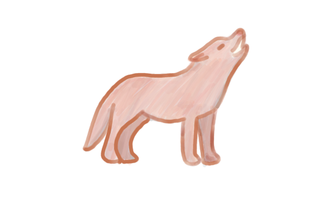
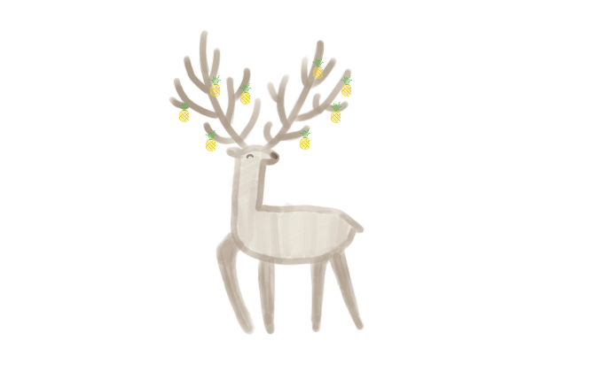
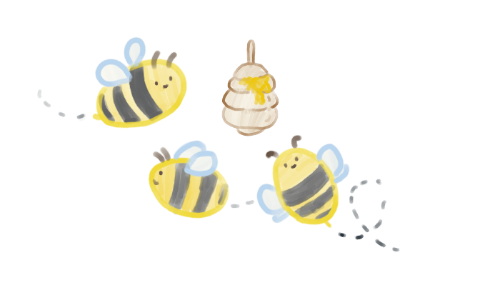

It's time to retrieve the next ingredient. Where do you want to go?
Press I to check your inventory.
You have completed your journey! Return to Gourmando to make your dish with the items you've gathered.
Press I to check your inventory.
×
Apple from the Apple Wolves

To obtain this magical apple, adventurers must navigate the Enchanted Orchard, a mystical forest inhabited by the elusive Apple Wolves. These creatures guard the trees bearing apples with a sweet and enchanting flavor.
×
Pineapple from Pinedeers

To obtain the pineapple, you must venture into the Cloudcrest Mountains, where the graceful Pinedeers roam. Their antlers are adorned with ripe pineapples instead of leaves.
×
Sunbeam Honey from Sunflower Bees

To acquire the elusive Sunbeam Honey, you must journey to the Sunlit Meadow, a radiant and mystical place where the Sunflower Bees produce this golden nectar. Their hives are high among the sunflowers.